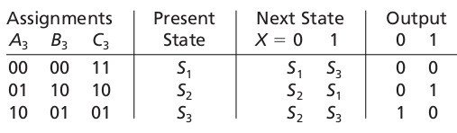
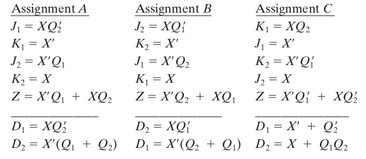
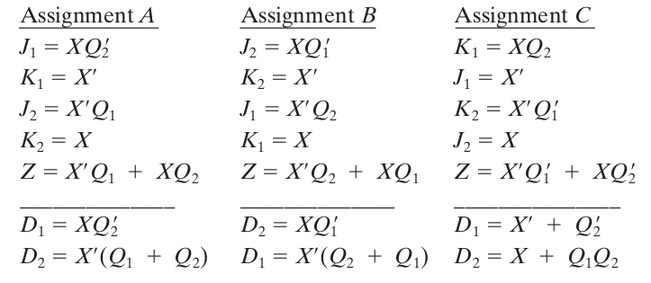
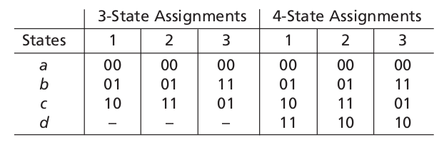
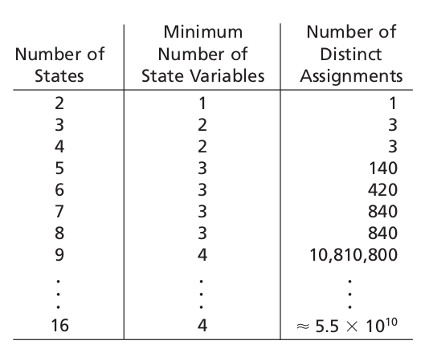
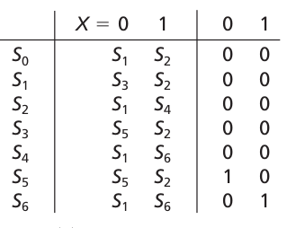

ECE 275: State assignment
Announcemnts
- Midterm 2 postponed on Nov 15th.
- HW 8 is posted is due next Wednesday (Nov 10th) at 9 AM before class.
Ex2: Parity Checker

Ex2: Parity Checker using T flip-flops
Ex2: Parity Checker using J-K flip-flops
Ex2: Parity Checker


State reduction: Ex1
A sequential circuit has one input (X) and one output (Z). The circuit examines groups of four consecutive inputs and produces an output \( Z = 1 \) if the input sequence 0101 or 1001 occurs. The circuit resets after every four inputs. Find the Mealy state graph.State reduction: Ex1

State reduction: Ex1
State reduction


Equivalent states: Defn
- Let \( N_1 \) and \( N_2 \) be sequential circuits (not necessarily different).
- Let \( \underline{X} \) represent a sequence of inputs of arbitrary length.
- Let \( \underline{Z}_1 = \lambda_1(p, \underline{X} ) \) the sequence of outputs corresponding to \( \underline{X} \) starting at state state \(p \) for circuit \( N_1 \). Let \( \underline{Z}_2 = \lambda_2(p, \underline{X} ) \) denote the same for circuit \( N_2 \).
- Then state \( p \) in \( N_1 \) is equivalent to state \( q \) in \( N_2 \) iff \( \lambda_1(p, \underline{X} ) = \lambda_2 (q, \underline{X}) \) for every possible input sequence.
- Symbol: \( p \equiv q \)
Equivalent states: Thm
Two states \( p \) and \( q \) of a sequential circuit are equivalent iff for every single input \( X \), the outputs \( \lambda(p, X) \) are the same and the next states \( p_{t+1} = \phi(p, X) \) are equivalent, that is,- \( \lambda(p, X) = \lambda(q, X) \)
- and \( \phi(p, X) = \phi(q, X) \).
Implication tables: Ex2

Implication tables

Implication tables algorithm
- Construct a chart which contains a square for each pair of states.
- Compare each pair of rows in the state table. If the outputs associated with states i and j are different, place an X in square i-j to indicate that \( i\equiv j \).
- If the outputs are the same, place the implied pairs in square i-j. (If the next states of i and j are m and n for some input x, then m-n is an implied pair.)
- If the outputs and next states are the same (or if i-j only implies itself), place a check (√) in square i-j to indicate that \( i \equiv j \)
- Go through the table square-by-square. If square i-j contains the implied pair m-n, and square m-n contains an X, then i [ j, and an X should be placed in square \(i \equiv j \).
- If any X’s were added in step 3, repeat step 3 until no more X’s are added.
- For each square i-j which does not contain an X, \( i \equiv j \).
Equivalent State assignments
- Swapping flip-flops are equivalent.
- Inverting flip-flop are equivalent.
Equivalent State assignments: Ex1



Distict state assignments
Distict state assignments
Guidelines for state assignment
- (Group in-neigbours) States which have the same next state for a given input should be given adjacent assignments.
- (Group out-neighbors) States which are the next states of the same state should be given adjacent assignments.
- States which have the same output for a given input should be given adjacent assignments.
State assignment: Ex1

Thanks, Questions, Feedback?
https://vikasdhiman.info/ECE275-Sequential-Logic/